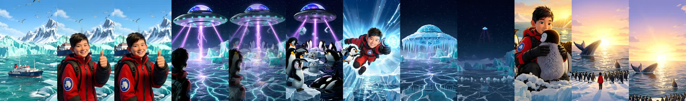
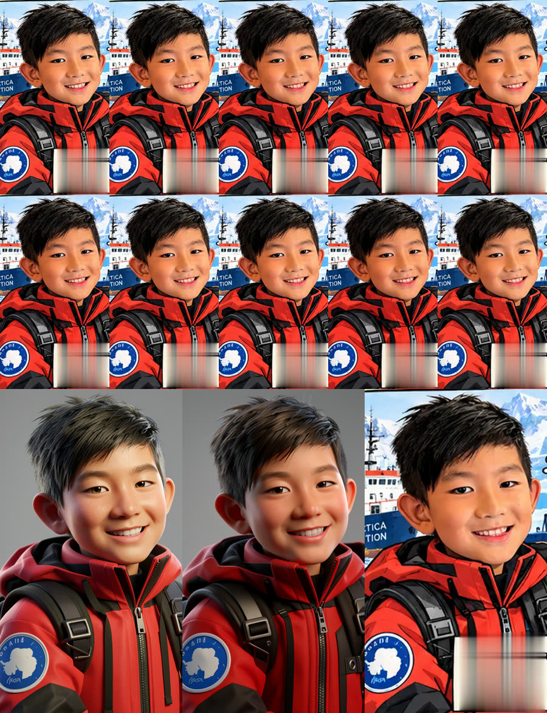
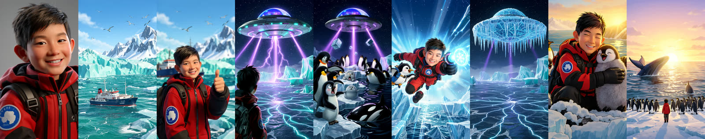
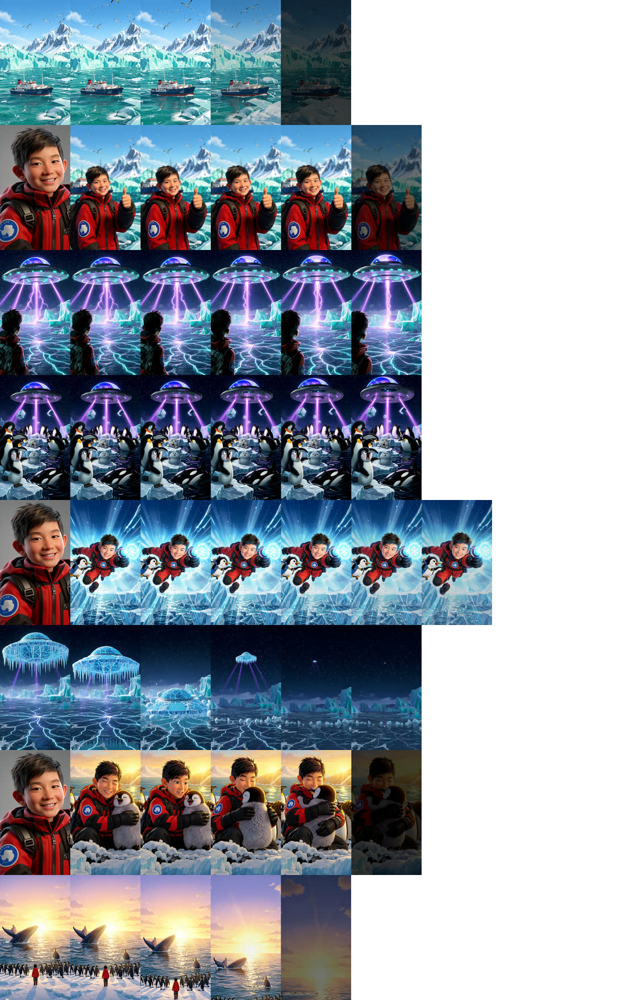

Plan for a 60-second vertical (9:16) short in a 3D animated feature-film look — stylised characters in a physically real world of ice, snow and ocean — made from a 5-panel 2D comic: Kyle, a boy on an Antarctic expedition, sees a UFO attacking the ice, rescues the animals with a freeze-ray gadget and ends hugging a penguin chick. Rendered entirely with draw-things-cli: the comic is first turned into approved 3D model sheets (Kyle, sidekick penguin, chick, saucer); each shot's first frame is the panel converted to 3D and locked to those masters; LTX-2.3 animates it; the existing scripts upscale and cut. Pictures and music only.
Watch: YouTube Short (uploaded 2026-09-23, the 2160×3840 master).
Delivered: raw/clips/kyle/final/kyle_rescue_1080x1920.mp4 (60.0 s, HEVC, 95 MB) and kyle_rescue_2160x3840.mp4 (299 MB master), music "Best Adventure Ever" from 93.4 s to its natural end (mean −18.8 dB, peak −1.6 dB). No human input after the go.

--strength < 1 is nearly a no-op on the released CLI (0.7–0.9 returned the 2D panel almost unchanged, smear and all). Strength 1.0 = edit mode: the image becomes a reference and the prompt an instruction. That alone converted the P1 face into a clean 3D master in 30 s.scripts/dt_diptych.sh). It carried Kyle's face, hair and parka into S2, S3, S5 and S7. The same trick with an approved shot as the reference chained the saucer (S3 → S4, S6), the ship (S2 → S1) and the finale's look (S7 → S8). B1 (building main) failed to compile and wasn't needed; B3/B4 were never used.

| Shot | Still | Rejected candidates | Clip | Kept |
|---|---|---|---|---|
| master | edit, seed 2 (darker hair, closer to comic) | 0.7–0.9 img2img ×9 (still 2D) | — | — |
| S1 | edit of S2, seed 1 | — | v1 | 0–6.5 s (LTX fades to dark after ~f170) |
| S2 | diptych, seed 4 | seed 3 double thumbs, seed 5 face covered, 2 zoomed-out edits | v1 ✗ thumb drops f124, hair spikes f186 ("wind" in prompt); v2 ✓ ("keeps holding his thumbs up", "hair stays neat", seed 2) | 0–8 s |
| S3 | diptych, seed 1 | seeds 2, 3 dropped the boy | v1 ✓ | full 10 s |
| S4 | diptych with S3, seed 1 | — | v1 ✗ pull-back after f140, chick vanishes, orca morphs; v2 ✓ ("camera holds completely still, same framing") | full 10 s |
| S5 | diptych, seed 1 | seed 3 different face | v1 ✓ | 0–6 s |
| S6 | edit of S3, seed 1 | — | v1 ✓ (saucer drops onto the ice, bursts free, flies off) | 1.6–8.8 s |
| S7 | diptych, seed 1 | — | v1 ✓ | 0–8 s (end fade) |
| S8 | diptych with S7, seed 2 | seed 3 no boy | v1 ✓ | 0–9.6 s (fade = ending) |

| Stage | Time |
|---|---|
| klein still, 576×1024 edit | ~30 s |
| klein diptych, 1152×1024 | ~55–60 s |
| 8 shots × 3 seeds + master sweep | ~35 min |
| LTX-2.3, 576×1024 × 249 f (portrait) | 9 min 21 s – 9 min 31 s each, 10 clips |
| Real-ESRGAN x4plus → 2160×3840 | 6.8–11.1 min per clip (~20 frames/min), 69 min total |
| Assembly + music + 1080 copy | ~1 min |
| Wall clock, go → film | ~3 h 40 min |
while read loops that call ffmpeg need -nostdin (or a separate fd) — ffmpeg eats the loop's input. Cost one restart tonight.| Panel | Story beat | Kyle in frame? | Text to remove |
|---|---|---|---|
| 1 "A brave boy with a big dream" | Kyle on the ice, expedition ship behind, thumbs up | face, frontal close-up | title box, thought bubble, caption box |
| 2 "A mysterious UFO appears" | night, Kyle seen from behind looking up at a saucer firing purple beams at the ice | back of head only | title, "Wow! A UFO?!", caption |
| 3 "Animals in danger" | penguins, seal, orca, whale; beams lifting ice blocks | no | title, "Help!", caption |
| 4 "Kyle to the rescue!" | Kyle flying, freeze-ray with a snowflake glow, penguin sidekick | face, ¾ | title, bubble, 4 starbursts, caption |
| 5 "A happy ending" | sunrise, Kyle hugging a chick among penguins, seal, whale, orca, wooden sign | face, frontal | title, caption, slogan |
The comic fixes the character designs, the palette and every composition. It is drawn in 2D, and the film is 3D — so the comic is now the layout and design reference, and the thing every shot must match is a 3D master made from it once (§4b, stage A).
Kyle is Kevin's son; consent is Kevin's (confirmed 2026-09-22). No photo of Kyle is used — his face comes from the comic only.
| Question | Answer | What it changes |
|---|---|---|
| Look | 3D animated film — stylised characters, physically real world | 2D panels must be converted, not just cleaned → higher klein strength → the panel alone no longer guarantees the face → new model-sheet stage and master-locking (§4b) |
| Face reference | the comic, no photo | Kyle's 3D face is designed from P1/P4/P5; Kevin approves it once and it becomes canonical |
| Aspect | 9:16 for phones | stills and clips at 576×1024; master 2160×3840, delivery 1080×1920; both scripts need a portrait option (step 5a) |
| Text on screen | none | no captions, title or end card; bubbles still painted out |
| Narration | none | — |
| Sound | music only | LTX audio discarded; assemble_film.sh pads mute clips with silence under MUSIC |
| Music | "Best Adventure Ever" — geoffharvey (Pixabay, 2:33) → raw/clips/music/best_adventure_ever.mp3 |
last 60 s of the track (step 6) |
From headless cli pipeline §1b: the released CLI (1.20260430.0) takes one --image (img2img for klein; true I2V for LTX with --frames), no Moodboard, LTX 249 f in 9 min 41 s, klein still in ~30 s.
For a 2D comic kept 2D, one image was enough: img2img at 0.5 keeps the face. Converting to 3D needs strength ~0.75–0.9, and at that strength klein keeps the layout but redraws the face. Each shot would then get its own 3D Kyle. So each shot needs two inputs — the panel (layout) and the master (identity) — and the released CLI takes one. §4b lists four ways around that, in order of preference.
High-end 3D animated feature film still. Stylised characters in a realistic world: physically based lighting, real-looking ice, snow and ocean water, soft global illumination, subsurface scattering on skin, detailed fur and feathers, cinematic depth of field, rich natural colour. (if klein renders too plastic or too flat, K0 tries adding "Pixar-style")Kyle, one cheerful young East Asian boy with slightly stylised proportions, short spiky black hair, dark brown eyes and a wide smile, wearing a bright red and black insulated expedition parka with a round blue Antarctica patch on the left chest, black backpack straps over both shoulders, black gloves.Antarctica: turquoise icebergs, snowy white mountains, deep blue polar ocean.a large silver-grey flying saucer with a glowing blue-violet dome on top and a ring of cyan and purple lights around its rim, crackling purple energy beams from its underside, no aliens visible.emperor penguins with black backs, white bellies and yellow-orange neck patches.a fluffy grey emperor penguin chick with a white face and a black cap.a small cheerful penguin wearing a little blue backpack.a round silver-grey seal pup with big dark eyes.an orca, glossy black with a white belly and a white eye patch.a dark blue-grey humpback whale with long white-edged flippers.an expedition icebreaker ship with a dark blue hull, a red band and a white superstructure.3D animated feature film, smooth expressive character animation, soft cinematic lighting, consistent character, no text.Two stages, like a real animation studio: design the characters once, then shoot every scene against those designs.
| Master | From | File |
|---|---|---|
| Kyle — face + upper body, frontal | P1 face crop (bubble removed) | raw/kyle/masters/kyle_front.png |
| Kyle — ¾ view | P4 face crop | raw/kyle/masters/kyle_34.png |
| Sidekick penguin | P4 | raw/kyle/masters/sidekick.png |
| Chick | P5 | raw/kyle/masters/chick.png |
| Saucer | P2 top | raw/kyle/masters/ufo.png |
Adult penguins, seal, orca, whale and ship don't get masters: real-looking animals are generic enough that the text lock carries them.
# one candidate per strength × seed; pick by eye
for st in 0.75 0.85; do for sd in 1 2 3 4; do
draw-things-cli generate -m flux_2_klein_9b_i8x.ckpt \
--prompt-file raw/kyle/masters/kyle_front.txt \
--image raw/clips/kyle/p1_face_clean.png --strength $st \
--width 576 --height 1024 --steps 4 --cfg 1 --seed $sd \
--config-json '{"shift":3.0,"sampler":16}' --offline --disable-preview \
-o raw/kyle/masters/cand/kyle_front_s${st}_${sd}.png
done; done
Prompt = style_head + kyle lock + "plain soft grey studio background, front view, head and shoulders". Kevin picks one per master; the ¾ Kyle must visibly be the same boy as the front one. Every later check is against these files, not the comic.
Each shot starts from its panel (layout) and must carry the master (identity). Methods, tried in this order — K1 decides:
main, multi---image — brew install --HEAD drawthingsai/draw-things/draw-things-cli. Then --image p1_clean.png --image masters/kyle_front.png with "Turn picture 1 into a 3D animated film frame; the boy is the boy in picture 2". The clean, real answer; Swift-version build friction reported, so it's a test, not a given.overlay the master face, scaled and placed over the face → klein at 0.3–0.35 to blend the seam and light. Reliable for frontal faces (S2, S7); hard for S5's ¾ in flight.Shots without a face (S1, S3, S4) need none of this: panel → 3D at 0.8 is enough, since Kyle is seen from behind in S3 and is carried by the parka.
| Shot | Layout from | Identity from | Method |
|---|---|---|---|
| S1 ship | P1 left side (ship), padded | ship lock | panel → 3D 0.8 |
| S2 | P1 | kyle_front | B1 → B2 → B3 |
| S3 | P2 | parka + back of head; ufo master | panel → 3D 0.8; saucer checked against master |
| S4 | P3 | animal locks | panel → 3D 0.8 |
| S5 | P4 | kyle_34, sidekick | B1 → B2 (B3 weak for ¾) |
| S6 frozen saucer | collage: ufo master over S4's 3D ice | ufo master | collage → klein 0.5 (both inputs already 3D, so low strength) |
| S7 | P5 | kyle_front, chick | B1 → B2 → B3 |
| S8 finale | collage: S7's 3D animals along the bottom, sunrise sky above | locks | collage → klein 0.55 |
Collages now use 3D pieces — masters and earlier approved shots — so they only need blending, not converting. That keeps the saucer in S6 identical to S3's, and S8's animals identical to S7's.
LTX keeps frame 0 exactly, then drifts. Lost City rules: - face shots (S2, S5, S7): hold-position wording — Kyle smiles, rocks, turns his head; he doesn't walk, spin or leave frame; - slow foreground, busy background (S3, S4): the action goes to beams and ice; - fast action short: S5 ≤ 6 s, cut at the first changed frame; - little camera motion: camera moves make LTX invent picture at the edges, where extra penguins and second saucers come from.
ffmpeg -i raw/clips/kyle/s2_ltx_v1.mov -vf "select='eq(n,0)+eq(n,124)+eq(n,248)',scale=288:-1,tile=3x1" \
-frames:v 1 raw/clips/kyle/s2_qc.png
Reject or trim if: Kyle's face differs from the master (eye shape, hair silhouette, smile); the parka loses its red/black split or the blue patch; a count changes (two boys, a second saucer, merged penguins); an animal changes species or markings; the look slides to 2D or to live-action photo. Retry: new seed → next method → shorter trim.
Last resort if no method holds the face: a cloud-trained Kyle LoRA (klein, ~$1, character consistency §3) on the approved masters plus the kept stills.
comic_source.webp
│ ffmpeg: 9:16 windows + face crops → delogo bubbles → scale (steps 1–2)
▼
Stage A face/entity crops ──klein img2img 0.75–0.85, 8 candidates──► masters/ (Kevin picks)
▼
Stage B panel_N_clean + master ──B1 multi-image │ B2 diptych │ B3 transplant──► sN_still.png (576×1024)
no-face shots ──klein img2img 0.8──────────────────────────────►
collage shots ──ffmpeg overlay of 3D pieces → klein 0.5–0.55──►
▼
draw-things-cli LTX-2.3 --image still --frames 249 → sN_ltx_v1.mov (QC sheet)
▼
trim → upscale_4k.sh W=2160 H=3840 (realesrgan-x4plus)
▼
assemble_film.sh W=2160 H=3840 XFADE=0.75 MUSIC=bed → 2160×3840 → 1080×1920 copy
kyle_rescue in projects.json (status planned). Stills and clips in raw/clips/kyle/, masters in raw/kyle/masters/.
Whole-panel boxes in the 1024×1536 source (approximate — measure on the first run):
| Panel | panel box (w:h:x:y) | 9:16 method | Why |
|---|---|---|---|
| 1 | 506:470:6:6 |
B pad | a tight 264-wide window loses the thumbs-up |
| 2 | 500:470:518:6 |
A tight 264:470:~560:6 |
boy at the bottom, saucer at the top — already vertical |
| 3 | 534:514:6:486 |
B pad | the animals are spread across the panel |
| 4 | 488:514:530:486 |
B pad | Kyle and the gadget run diagonally |
| 5 | 1012:520:6:1010 |
A tight 292:520:~270:1010 |
the hug fills a vertical window by itself |
h×9/16 wide around the subject.mkdir -p raw/clips/kyle raw/kyle/masters/cand
ffmpeg -i raw/kyle/comic_source.webp -vf "crop=292:520:270:1010" raw/clips/kyle/p5_crop.png # A
ffmpeg -i raw/kyle/comic_source.webp -filter_complex \
"[0]crop=506:470:6:6,split[a][b];[a]scale=506:900,boxblur=30[bg];[bg][b]overlay=0:(H-h)/2" \
raw/clips/kyle/p1_crop.png # B
Plus face crops for Stage A (P1 head and shoulders, P4 head, P4 penguin, P5 chick, P2 saucer). Always hand the CLI a 9:16 image — it center-crops otherwise.
delogo over each bubble, starburst or caption box, then scale to 576×1024 (or the crop's own size for masters):
ffmpeg -i raw/clips/kyle/p1_crop.png \
-vf "delogo=x=290:y=215:w=210:h=150,scale=576:1024:flags=lanczos" raw/clips/kyle/p1_clean.png
The conversion repaints the smear.
Commands in §4b. Strength guide for klein converting 2D → 3D (K0 verifies): 0.6 ≈ still reads as a drawing; 0.75 ≈ 3D shading, face close to the comic; 0.85 ≈ full 3D, face starts changing; 1.0 ≈ layout only.
draw-things-cli generate -m ltx_2.3_22b_distilled_1.1_q8p.ckpt \
--prompt-file raw/clips/kyle/s2_video.txt --image raw/clips/kyle/s2_still_v1.png \
--width 576 --height 1024 --frames 249 --steps 8 --cfg 1 --seed 1 \
--config-json '{"sampler":19,"shift":5.0,"stochasticSamplingGamma":0.3,"fps":25,"hiresFix":false}' \
--offline --disable-preview --video-format prores422hq -o raw/clips/kyle/s2_ltx_v1.mov
Always 249 frames; trim in the edit. 576×1024 = the same pixel count as Lost City's 1024×576, so ~10 min per clip (portrait not yet tested). Audio is ignored. The progress spinner is TTY-only.
upscale_4k.sh and assemble_film.sh hardcode 3840:2160 and would crop a portrait clip to a landscape strip. Add W/H env vars (default 3840/2160) to both; pass W=2160 H=3840. Update scripts reference.
ffmpeg -i raw/clips/kyle/s2_ltx_v1.mov -t 8 -an -c:v copy raw/clips/kyle/s2_ltx_v1_t.mov
W=2160 H=3840 scripts/upscale_4k.sh raw/clips/kyle/s2_ltx_v1_t.mov s2 realesrgan-x4plus
x4plus now, not the anime model: 3D renders have fur, snow and water texture that the line-art model flattens (K5 confirms). Never upscale while LTX renders.
Music = the tail of the track, so the film ends on the song's own ending. Its loudness from 93 s on (5 s windows, dB): −20 −19 −24 −23 −22 −22 −20 −19 −18 −19 −23 −38 — a dip under the UFO (S3–S4), the peak near the freeze-ray (S5–S6), the ending under S7–S8.
D=$(ffprobe -v error -show_entries format=duration -of csv=p=0 film_nomusic.mp4) # or kept lengths − fades
ffmpeg -ss $(echo "153.5 - $D" | bc) -i raw/clips/music/best_adventure_ever.mp3 -t $D \
-af "afade=t=in:d=1.5" raw/clips/kyle/music_bed.wav
W=2160 H=3840 XFADE=0.75 MUSIC=raw/clips/kyle/music_bed.wav \
scripts/assemble_film.sh raw/clips/kyle/kyle_rescue_2160x3840.mp4 s1_4k.mp4 … s8_4k.mp4
ffmpeg -i raw/clips/kyle/kyle_rescue_2160x3840.mp4 -vf scale=1080:1920:flags=lanczos \
-c:v hevc_videotoolbox -b:v 12M -tag:v hvc1 -c:a copy raw/clips/kyle/kyle_rescue_1080x1920.mp4
scripts/dt_render.sh <project> <scene> (proposed in headless cli pipeline §5): prompts from projects.json, stills over 3 seeds, LTX on the chosen still. Masters and stills are picked by eye first; the 8 clips then render in one overnight loop.
8 clips, 7 crossfades of 0.75 s: ~65 s kept, ~60 s after fades.
| # | Keep | Still | Motion (LTX prompt core) |
|---|---|---|---|
| S1 | 7 s | tall frame: expedition ship small at the bottom on a turquoise sea, towering iceberg and sky above, gulls | slow tilt down from the gulls to the ship, gentle swell |
| S2 | 8 s | Kyle close-up, ship behind, thumbs up | holds his place, smiles wider, thumb bobs once, hair and parka stir; camera still |
| S3 | 10 s | night, Kyle from behind at the bottom, saucer overhead | Kyle only turns his head; saucer hovers and pulses, purple beams crackle onto the ice, ice glows and cracks |
| S4 | 10 s | penguins, seal, orca, whale on breaking ice | ice blocks rise slowly into the beams, floes split, penguins huddle and flap, seal looks up |
| S5 | 6 s | Kyle mid-air aiming the freeze-ray, sidekick beside him | glides forward, gadget fires a blue snowflake beam, frost spreads; cut at first drift |
| S6 | 6 s | saucer encased in cracked blue ice | ice cracks, saucer shakes free and zips up into the stars |
| S7 | 10 s | sunrise, Kyle hugging the chick | hugs and rocks gently, chick nuzzles, penguins bob at the edges, sun glints |
| S8 | 8 s | tall sunrise: sky above, whale tail and penguins with a small boy far away below | slow rise into the sky as the music ends |
| # | Question | Test | Pass |
|---|---|---|---|
| K0 | 2D → 3D conversion | P1 face crop at 0.6 / 0.75 / 0.85 / 1.0, ± "Pixar-style", 2 seeds | a 3D boy who still reads as the comic's Kyle; Kevin picks the master |
| K1 | Which master-locking method? | S2 via B1 (try the --HEAD build), then B2 diptych, then B3 transplant |
S2 still matches kyle_front on the QC sheet |
| K2 | Does LTX keep the 3D-animated look? | S2 clip | no slide to live-action photo or back to 2D over 10 s |
| K3 | Face drift over 10 s | S2, S7 | face matches master at frame 249; else trim to 5–6 s |
| K4 | Fast action | S5 | clean ≥ 5 s |
| K5 | Upscaler | x4plus vs anime on S2 | x4plus expected better on fur and snow |
| K6 | Collage blend | S6 at klein 0.4 / 0.5 / 0.6 | saucer = master; seams gone; one saucer |
| K7 | Portrait LTX | S2 at 576×1024 | ~10 min, motion as good as landscape |
| Stage | Count | Each | Total |
|---|---|---|---|
| Masters (Stage A) | 5 masters × 8 candidates | ~30 s | ~20 min + Kevin's pick |
--HEAD build attempt (K1) |
1 | — | ~30 min, once |
| Shot stills (Stage B) | 8 shots × 3 seeds, some two-pass | ~30–60 s | ~20 min |
| LTX clips | 8 + ~50% retries | 9 min 41 s | ~2 h |
| Upscale x4plus (~1 625 frames) | 8 | ~13 frames/min | ~2 h |
| Script change (step 5a) | 1 | — | ~15 min |
| Assembly + delivery | 1 | — | ~10 min |
About 5–6 h of machine time, plus ~1.5 h picking masters, stills and trims.
None — all answered 2026-09-22 (§2). The master Kyle is Kevin's pick after K0.